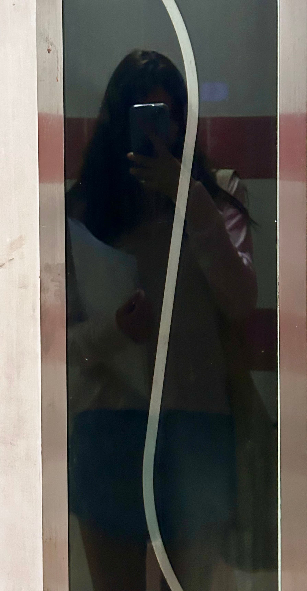
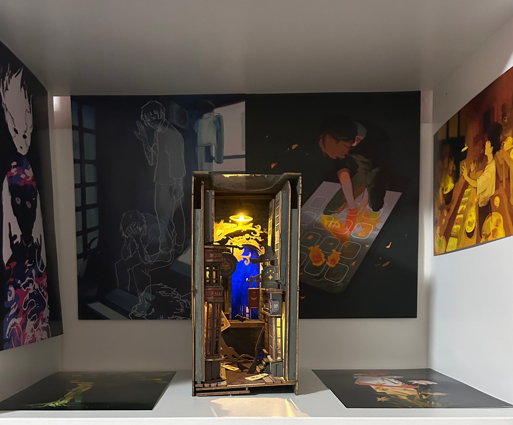
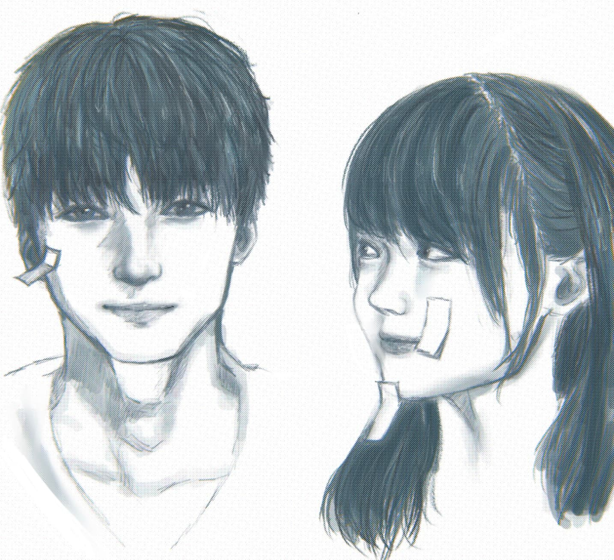
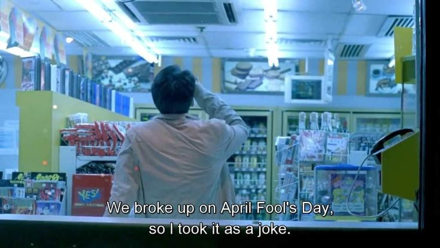

- Contents
-
2025
-
May
17
- 4:27 "Nocturnal"
Like clockwork, every time there is an extended break of some sort in the school term, I immediately become nocturnal - sleeping at the time when others have their morning coffee, and waking up when the sun is about to set. I sleep for 14 hours some days. It's always been a problem, but I physically cannot get out of bed unless I have an appointment or somewhere I really want to go.
Do I want this? Absolutely not. I'm deficient in Vitamin D, and it's not like I have anywhere to go in the day, but I still want to retain some semblance of normalcy in my life. Living like a corpse, or worse, a deadbeat, takes away one's life force expeditiously. I feel, no, I know that I'm wasting my time away. Time passes so fast when you're just living idly. I want to find a way to make it all slow down, but these days I can't find it in me to do anything at all.
I want to go abroad. I want to see the world while I still have this young body and the energy. I don't want to wait any longer to see beautiful things and make beautiful memories. I'm already terrified of growing old, but I'm petrified of having nothing to remember. But I'm so scared of going somewhere unfamiliar alone, yet I don't wish to travel with family.. and the person I want to be with can't escape theirs.
11
- 12:21 "I'm So Happy"
Finally unwinding after an eventful day - today I met my friend whom I haven’t seen and barely spoken to in over 2 months…
It’s never awkward when we finally see each other again, even though just a week ago I straightforwardly asked her if she didn’t want to be friends anymore.
We went to a cozy little cafe first, but everything I wanted turned out to be unavailable which is just my luck. I ended up just eating a croissant for lunch…
Afterwards, we went to a yearly art convention, and I met one of my favourite artists, whom I met before but this time I actually managed to hold a conversation with them! Because I went all out and bought many of their prints, I was able to say some things when they thanked me profusely for buying so many things. I managed to tell them that I’ve been following them for many years, and that I loved their original work and Mob Psycho 100 fanart the most. This was no easy feat because my mind literally went BLANK the second the interaction started. I could feel myself blushing and I was so starstruck. A little context, drawing was my first ever hobby - one that I picked up from my childhood best friend, for this reason, it has always been very close to my heart. I have so much respect and love for artists, art and animation in general. I should write about it one day!
They were so sweet, and I was grinning like an idiot to myself before, during and after the interaction even when I was walking around the other booths. They were also dressed in cosplay but I forgot to tell them how cool they looked. I heard of people buying their favourite artists some local snacks, since most of them were foreigners, and I wish I had remembered to do that. They were so cute and lovely and I can’t wait for them to hopefully come back next year. I think my lifespan just extended by 5 years because of this memory.
I bought a file so that the precious artworks wouldn’t get bent in my bag.

It's a work in progress..! This part of my bookshelf is now hereby dedicated to the artist Litarnes!
1
- 22:26 "Youth"
I just finished binging a slice-of-life romance/youth series yesterday morning, and I have not felt this much happiness in several months. Having to pause several times just to clutch my chest and calm myself down because of my heart racing, giggling and grinning to myself non-stop, and having so much energy to release that I began to understand why cats make biscuits when they’re excited.
I was genuinely not expecting to like it at all, bracing myself for cringey moments and annoying gender stereotypes among other trite tropes, but it was the total opposite. I’m also way past that phase in my teens when I liked cutesy romance stuff, but this show was the perfect mix of romance, friendship,family, the bittersweetness of youth... My favourite OST from the show has these (translated) lyrics I really love and can't get out of my head:
You purified my tears with sincerity
你真诚地纯粹了我的泪珠
and smoothed out the wrinkles from my past
抚平那些褶皱的往事
I really, really really love slice-of-life and youth themed media that centers around friendship. Even if there’s romance, they are friends first before anything else, and they truly understand each other and know each other’s pains. Friendship is the backbone of all meaningful relationships.. I think everyone idealises someone when they have a crush on them because it’s easy and convenient to do so. It’s much, much harder to take the time and effort to know someone, understand them and somehow still have the capacity for romantic feelings towards that person. But, that sort of love is the kind that lasts a lifetime and is endlessly meaningful.
I really love witnessing love. Whether it’s in the real world or in fiction. I don’t have feelings of envy whenever I see a happy couple or happy friendship.
Slice-of-life is perhaps my favourite genre of all time. If it is well written, the happiness it gives me is extremely overpowering and I feel like I’m reinvigorated, not necessarily with hope, but joy. It’s not that I hope for these beautiful things I witness to happen to me. I just feel the happiness vicariously, throughout my body.. One of my favourites from this genre is the anime A Place Further than the Universe. Even the title is so poignant and beautiful to me. I have to say, I am so grateful that I am able to experience love vicariously in all its glory. It helps me carry on living.
I’m trying to write more positive things in these entries as I really don’t wish for this website to be so muddled with sadness and dreadfulness but rather somewhat of a mix of joy and melancholy, as life is. Even if I don’t go through positive experiences myself, I’d like to write more about the things that have made me happy and the things I love. I’d like to see this page mostly filled with things I'd like to remember, instead of things I'd like to forget. I've always hesitated keeping a diary because of this.
I can’t believe it’s already May! I think May is a very pretty month. May your May (ahem..) be full of pretty things!
 -
Apr
13
- 23:35 "Misfortune"
I went to a new 24 hour cafe for a couple of hours, I’ve been getting sick of the old one because all I do is buy overpriced drinks that make me feel sick because I’m lactose intolerant. At least this cafe has more choices. The cafe was almost empty and peaceful when I arrived but immediately filled up within the next 5 minutes.
I kept getting distracted by this wonderful mother and daughter sitting in front of me, they were so lovely.. The mom seemed to be having a normal conversation with her daughter who was sitting opposite her, like a real adult. It was so adorable. I rarely see things like that. She eventually came up beside her mother to take some pictures together before leaving.
The only other time I’ve seen a parent who genuinely got along with their young children like they would with an adult is earlier this year, while I was in a shuttle bus that transported us from the airplane to the airport. We were packed tightly in that bus, and it was really awkward because the daughter was standing right in front of me, the son was beside me and kept accidentally nudging me with his backpack (I didn’t really mind it), and she desperately tried to get him to stop it but there really wasn’t any space. They were children, maybe 10 or 12 or so. The little girl and I were facing each other and it was unbearably awkward as I tried my best to look straight ahead, with my hot pack in my hands because I was freezing, even though I could feel her eyes on me. It must’ve been like 30 minutes before we finally reached the airport.
The mother was casually chatting with them, making jokes in a language I couldn’t understand. They looked so happy and blissful. Like they knew they’d be alright because they had each other. The last image I have of them in my brain is them walking over to the line for people waiting for their layover flights.
For some reason, this little interaction had such an impact on me and I don’t even know why. I guess life is supposed to be filled with moments like that. I hope there will be more to come.
A lot of people don’t treat children as actual intelligent human beings. I’m not sure if it’s because they can’t remember what it’s like when they were a child, or if they were… as “empty” as they seem to think all children are.
People tend to think that children just cry for no reason. That they can’t really form a rational thought. But I know this is utterly untrue from personal experience.
I think that in life, there are dice rolls you get to make. You first roll the dice when you’re born for good people as your parents, for loving parents, for parents who just wanted you. If you didn’t even get at least one, then…
After some time, you can roll the dice again and try to find a parental figure in your teachers. Or some other adult you meet. But if you fail enough times, and a certain amount of time has elapsed, the dice disappears because you’re now too old to find someone who will take you under their wing or have a parental instinct with you.
So much in life is dependent on dice rolls.
I missed my stop on the way back home and had to walk home, crossing busy roads over and over again.
A random car honked while passing by, but the car road was empty. Guess they thought I’d be scared or something.
16 Apr 02:47
It’s been raining the past few days, and I’m trying to really enjoy this while it lasts before it gets insanely hot in the summer again. At night, the various neon colours from the lights are reflected in the rainfall and it’s so beautiful. The raindrops make perfectly symmetrical ripples upon hitting puddles of water, and it reminds me that life really imitates art. The raindrops seem so much heavier nowadays than I remember them to be.
19 Apr 18:30
At the same cafe again. It started raining really heavily, and I’m sat beside a large glass window at the entrance, that countless strangers walk past, each of them with different places to be.
I happened to look outside when a loving couple stopped directly in my line of sight. The man was drying the lady’s forehead with some tissue. Is this some sort of magical cafe where you will always witness love upon entering?
19:55
I didn’t get as much work done as I wanted because I just can’t sit still in one place for very long. Also, one of the waiters tried to make some small talk and I totally messed it up, it was really embarrassing, I could never have predicted that would happen. It’s enough to make me reconsider going back. And I also really dislike when a service worker clearly acknowledges my presence. It’s just too awkward for me and I already have trouble focussing when so many people are around me. It’s a little hypocritical of me, because I do believe small relationships like that with acquaintances are integral to life. I am full of contradictions.
21 Apr 22:17
Nevermind, I went back on my word… I really like that cafe and went back again. I love the matcha too much to let it go, and I figured there’s no escaping from making passing acquaintances anyway and it was really immature of me to think in such a negative way, when one day (if I grow old), I’m way more likely to be ignored and “invisible”, the way I always wish for myself to be now… I wish I’d learn how to be more appreciative of every moment more.
Today, the friendly waiter was there again. He keeps telling me not to be shy… but it’s not my fault that I can’t make eye contact well. It’s not like I didn’t do it at all… plus I talked! I wouldn’t classify someone who talked to be shy but oh well.. to each their own…
As I figured, he was that same waiter who gets complimented in that cafe’s Google reviews, because he offered to take a family’s pictures for them, just like many reviews have said. I felt more at ease after realising, because I’m always on edge with ... I can’t help it. I drew a little today to keep myself awake. The cafe played some songs with the word ‘Angel’ in it and it kept distracting me. They played a song from the 80's that I enjoy... Nothing’s Gonna Change My Love for You .
Also, today I got catcalled while crossing the street. By a man that was also crossing the street, but in my direction.
I don’t get very phased by just words, but what was more noteworthy to me was another man who was also walking my way. I kept my gaze down so all of this is just baseless speculation. But he didn’t seem to care at all. It’s not like I expected him to say something, of course, I just wonder if he had a reaction to it.
I wonder what he thought about it, if at all. It’s not like it’s common to see that, especially in the day, at a crosswalk.
It reminded me of another interaction late at night a few years back. That one was scary, and the ‘witness’ from that night didn't pay any mind to it. His callousness staggered me.
I guess I just came face to face with what I always knew, that no one actually cares.
23 Apr 10:43
I’ve really done it now. I was up late studying until 5am. I slept through my alarms and missed a morning final exam. Yeah, many people, including myself, have had this nightmare. This was the retake exam because I was sick last year when I first took this class and had to miss it. I’ll likely have to retake this entire module now. I think this was bound to happen to someone like me eventually.
My professor emailed me asking where I was, and I just emailed her back telling her what happened. I don’t think I’d be able to save myself even if I typed out an essay, so I just apologised. There are no makeup exams for finals in my school so there is nothing I can really beg for besides a passing grade which I know won’t happen. I have to focus on my other exams now.
I’m just so sick of it all. I don’t want to be here. I just wanted to just a normal life and follow where it took me. The pattern was always the same. After entering a new school - a new environment - things always begin to deteriorate sooner or later. It’s the exact opposite for others, things get better as they acclimate and get used to the new environment, like how it’s supposed to be.
And I know, retaking a class isn’t the end of the world. But the feeling of immense dread and failure won’t leave me. Knowing I’d have to talk to new people again to do the same group project. Knowing this could have all been avoided if not for my mistake. Everything from my freshman year. All I wanted was to be normal, like everyone else. How did I get like this? I think I already know.
1
- 18:29 "April Fools"
Today was a pretty good day! Despite having to do an online presentation for class. During the presentation, we were only using one person’s (who shared the screen to show the slides) computer audio and the rest of us had to mute ourselves and our output audio, but I guess something happened and there was a really long repeated sequence of someone saying “Oh”. It was really funny.

Before the presentation, I went to go get some food and one of my group members tagged along. he’s the group member that I mentioned in “Pointless Endeavours”.
We talked a lot while we were together, I always talk a lot whenever i’m alone with someone because I am very nervous and I’m terrified of being awkward. I always forget to ask the other person “What about you?” because I’m also scared of seeming uninterested as I know that I’m bad at continuing conversations if they answer with something that’s difficult to follow-up. Maybe these are just excuses, but I do try my best to ask about the other person! I really dislike talking about myself so much (talking for more than 5 seconds, really) and always regret it afterwards. And all I revealed was that I play games, sleep when the sun comes up, and study at a cafe.
My personality becomes quite different in these situations - the lengths I’d go to just to avoid any awkwardness... it’s way easier to be quiet if you’re with a group of people. We mainly talked about my horrible sleep schedule, the games I play and used to play, my study schedule (…) and where I usually go to study. I’m… surprisingly really bad at lying or evading questions by steering the conversation somewhere else and things like that; I didn’t want him to know which cafe I’m usually studying at but I told him anyway. I don’t think he’ll come find me or anything, but there’s a 0.1% chance that he might, which is very unsettling to me. I know he’s just super friendly and is like that with everyone, but… how should I put this.. I’m just really comfortable being alone right now. I have honestly gotten to the point where I cannot see myself making any friends from school. Joining a club now would be kind of late, and besides, apparently not having social media is a very unusual thing nowadays so I might be ostracised. I remember in my freshman year, I almost befriended a girl with a similar name to mine, she was super friendly, but the conversation abruptly died when she asked me for my Instagram and I told her I didn’t use it. I-Is not using Instagram indicative of being a serial killer or something..? I was really confused, and still kind of am.
That said, i’m still… unsure about this guy. He seems to be so kind and he cared enough to try to talk to me and include me in conversations (something I’m very very appreciative of), and is supportive of his friends on one hand, but on the other, he’s made very inappropriate jokes that guys typically make, I don’t think I wanna write them here but.. it’s just… so confusing. Humans are multifaceted after all, you really can’t just glorify them in your heads the second they’re nice to you like I always do. You (I) have to be discerning. But whatever, I won’t see him again after this semester ends anyway.
He’s extremely talkative. like extremely. After the presentation he was asking all of us personal questions (even though they are all part of the same friend group, I guess he wanted to know everyone better). I discovered that everyone there except for me … did not want to be studying this degree. And even I’m not even 100% into this degree like I thought I’d be myself, but that’s a story for another day.
Some of the girls wanted to be in fashion, the arts… even that guy wanted to be studying philosophy or theology.I actually planned to take a minor in philosophy or astronomy, but my school doesn’t offer them.I found this to be really sad, even though it’s obvious that a lot of people are in this course for the “money”. I just think it’s sad when people discuss their dreams and know that the reason they can’t pursue it is because they don’t have the financial privilege to. It’s all so bleak, without that guy’s personality, the room would probably be in a way more depressing mood. As the whole group is full of girls besides that one guy, they were discussing the bags and perfume they were into at the moment and I couldn’t join the conversation… but that’s okay. I got to talk about my volunteering experience with being a stray cat feeder as well. 🐱
I noticed that they were all… normal people. With normal struggles, a normal sense of humour… Usually, “popular” kids are always super rich and out of touch, like my previous group project members. I guess coming to university made me realise that a lot of these students are privileged, and even though my household has had financial struggles all my life, I never thought of myself as “poor” I guess, since I’m really good at saving money, and I’ve never been a big spender (except on food). My college tuition is also totally free thanks to financial aid from the government and school - you either need really good grades or have a very low income family. I guess they did talk about their many vacations though, and that guy said he’d spend $1,200 on shoes… so I guess we’re not so similar after all.
I tried to talk more so I had a LOT of social interaction today, which makes me oddly proud of myself (?). Even though I’d say we’re still all at the acquaintance level, it’s good enough for me. I even made a joke right as we all were about to leave and it was a HUGE hit, everybody laughed really hard. I’m going to be riding on this high for MONTHS.
Thinking about it, I’ve been seriously lucky for every single one of my group projects so far, I used to be the one doing all the work but since entering college I’ve been the one getting carried every time… It’s truly amazing. I guess my good luck in that aspect is to make up for my horrible grades.
Also, happy Chungking Express day! I like to imagine my life as a Wong Kar Wai film when I’m on the bus on a rainy night sometimes. I could only wish that mylonelinessmelancholia and the world around me was so beautiful.. lonely isn’t the right word I think, or is it? I’m not sure anymore.Chungking Express (1994)
-
Mar
17
- 20:42
"Melancholy"
On the way back home, I went to feed the ginger cat. I was terrified when he wasn’t moving (but still breathing), and his limbs were twitching randomly. I tried petting him or lightly tapping him but to no response. I called the animal rescue hotline but just like the last time, they dismissed me, and asked me to call another hotline.
I was about to call the other hotline when, a car drove past, and he suddenly woke up! I guess he was in dreaming very, very deeply.. I wonder what he was dreaming of. What do cats dream about?
As he seems like a very old cat, I don’t think he was starving, but rather dying to some sort of disease, which caused his weight loss. It wouldn’t make much sense otherwise, since there have always been people who feed the cats around here. He also seems to have a dental issue that prevents him from eating normally. I reached out to that organisation I was volunteering under last year, and they said they’re too short on funds to help him. I just hope that when he passes away, it’s painless, quick, and peaceful.
...
There is this large (fake) grass patch on my school’s campus. Earlier in the day, while I was walking through it to get food, I saw this person just sitting there, staring into blank space. After I got my food like 10 minutes later and was walking back the same way, I saw them again, in the exact same position. I hope they’re okay. Or, well, I’m not really in a position to wish anyone anything. Maybe they were just spacing out, it’s rude to project my own feelings and sadness onto a random person!
19 Mar 15:53
A somber gloomy rainy day today. The perfect day for this song. I was tearing up while listening to it on the bus ride home, I can't help it whenever I listen to this. I don’t think I was obvious at all but the woman sitting beside me kept looking over at me and I was feeling kinda embarrassed. Once I start crying to this song, I can’t stop, and I don’t want to hit pause or listen to something else either, because it is just too beautiful.. like some sort of masochistic loop.This song is already horribly sad enough on its own, but it became the most heartbreaking song in the world to me when someone who was once dear to me told me that she couldn't even download the song on her phone because she'd cry every time she'd listen to it. Actually, now that I think about it, I don’t think I even thought of it as sad before she told me so. How funny is that?
I guess a common interpretation would be unrequited love, or two people settling for each other because they cannot be with the people they really want.
Either way, I’d like to elucidate my interpretation of the song since the lyrics are just so… perfect.. to me. Rarely do I even like the lyrics of a song, let alone this much. I’m not going off the music video, since.. I don’t care.
“Up on Melancholy Hill, there’s a plastic tree”: The narrator is entrenched in their melancholy. The plastic tree symbolises the lack of life, a false life. But, a tree that technically doesn’t die, and requires no effort to sustain, yet looks alive… The melancholia is deep rooted.
“Well you can’t get what you want, but you can get me / So let's set out to sea, love": This can be interpreted in two ways - the narrator wishes to escape their melancholy which they believe the other person can help them achieve, taking a jump from the hill to the “sea”. Or, the narrator isn’t talking to anyone but themselves, their last sliver of ‘hope’ - “let’s leave this hill, this land of melancholia, to the sea” - i.e meeting their demise. Ashes are commonly spread across the sea. I think this interpretation makes sense, considering the next line, towards the end of the song..
“Up on Melancholy Hill, sits a manatee”: This might be a reach, but I believe this is referring to a manatee’s carcass that has washed up onto the hill from the sea, replacing the plastic tree, symbolising an end to the narrator’s pain and the “life”,… does this make sense?
Of course, there’s nothing wrong with viewing it as a purely romantic song. I might prefer that actually, it’s a lot less depressing, and I think every piece of art is better when it involves love for someone else, even if it’s about “settling” for that someone. Despite my interpretation of the song, I don’t think about that when I listen, but rather about that person who was dear to me. Certain lines like “Well you can’t get what you want, but you can get me”, “So call in the submarines, round the world we’ll go”, “Just looking out for the day when you’re close to me // When you’re close to me…” sting particularly hard. I truly love every line of this song.
Even now as I’m writing this, I’m listening to it.
14
-
02:10
"Fading"
Another school week has passed. Today, I discovered a cute little store selling Korean and Korean-English books, as well as coffee and tea. I know I shouldn't have, but I bought a small bottle of milk from the convenience store because I was hungry, and I brought it in with me.
With only one other customer in the store that left pretty quickly, it was awkward, but I tried my best to distract myself looking around. I quickly found a Korean picture book of Le Petit Prince, the kind that has cool 3D pop-ups within each page. It was so beautiful, I really wanted it, but it didn't have a price tag... It was a hardcover and kind of big, so it was probably expensive. Of course, everything was also in Korean, but that's what the camera function in the Google Translate app is for! I've never read Le Petit Prince before, but it seems well-loved by many.
The owner was a sweet lady probably in her 30s to 40s, who kindly came up to me and told me that I had to finish my drink before browsing the books (obviously). She had the sweetest smile, and a heavy Korean accent. It was certainly the nicest way I've ever been 'kicked out'. Sadly, the milk did not have a bottle cap and it was still pretty full, and I had to go back to class in 5 minutes anyway, so I just left the place. I might visit again next week when I wander outside aimlessly during the break again.. and show you the lovely picture book.
Some people are touch-starved, but I don't like to be touched. Instead, I am conversation-starved. In class, one of my group members asked if I lived here my whole life, because apparently I have a slight American accent. I really thought I'd gotten rid of it by now, but I guess not. I used to only watch American TV shows and cartoons when I was younger, and couldn't understand anyone who spoke English without that specific accent, I vividly remember being unable to understand my peers when they spoke to me. It was pretty bad. I told him this and he said that's probably why. I appreciated this interaction..
This marks one month since I've last spoken to a friend I've had for around 5 years now. I noticed the speed of her replies go from minutes to hours to days though she was online. She was never one to initiate or text first or ask to meet up, and recently she's made a bunch of online friends within a certain community, so I guess it adds up. We barely have any shared interests, but I thought we understood each other and cared for each other, and that that was enough. She posted about me one time after I'd gifted her something for her birthday, and in the replies she said she'd "treasure" me "for life". At that time I thought I was very touched, but I think I understand now that the post was never for me at all but rather more for herself.
Usually, I cave and check in with her because I miss her. But when I last read our message logs I felt so pathetic, so I didn't end up checking in this time.
Maybe it may seem like I'm overreacting, there are people who talk to their friends once a month or on a sparser frequency and still consider them as friends. But so much happens in merely a day. All the things you did. All the things you saw, in real life or through a screen. All the different strangers you encountered. All the various feelings you felt. All the things you thought about. All the songs you listened to. Humans don't change much if you share memories with them regularly but a big gap of memories unshared is like not syncing your data. Plus, old data is slowly being erased, thanks to the passage of time and its effects on our brains...
I'm not sure what to do about this. Maybe I'll end up being the one to check in again after all. After becoming kind of friend-less, I started to wonder if this is why people try so hard and struggle just to make a friend in a new environment. Real connections are more important than whether or not I'm alone. Maybe no one has ever felt connected to me.
What does it mean to be "close" to someone? Or to be a friend to someone? Does it mean knowing each other's past? Is it talking regularly? Is it wanting to share and make memories with them? Is it knowing for sure that they'll be in your future? I wonder if even 2 or 3 years from now, will you and I still know each other? I detest this feeling of unrequited platonic love...

-
Feb
24
- 20:41
"Pointless Endeavours"
Today I am attempting to make SUSHI BAKE! 🍣 After months and months of being cripplingly addicted to cooking Youtube shorts I have finally decided to try a recipe…… and I thought this looked simple enough. I was regretting my decision really hard when I was in the supermarket buying ingredients because it was SO heavy, mainly because of the sauces and the sesame oil. My right arm was clinging onto my body for its life and I was really scared of the bag breaking and having to pick up all my stuff infront of everybody, but thankfully it didn't break. I also bought some backup dinner from the supermarket in case this doesn't turn out edible. 😸 I was thinking of just getting out of there when I realised everything was too heavy, but I had already spent so long to find most of the ingredients (I do not frequent the supermarket… almost ever) so I decided to just bear with it. The cost of everything was enough to make me regret again though…
Right now I'm waiting for the rice cooker to finish cooking my rice, and I'm staring at the salmon… concoction that I've put together. It smells like cat food, and I think I was supposed to throw away the juice, but I didn't, and now it's all gooey and looks nothing like the Youtube short I'm referencing. I honestly started losing my appetite while I was mixing all the stuff together. Oh well…… I really hope this turns out good…
Because of that ordeal I put myself through, I actually didn't go to study after class today, breaking my routine. But, something lucky happened to me as a result! I was visiting all the neighbourhood kitties as usual, and this guy (maybe my age or younger) came up to me and said, "Hello, you feed the cats regularly right?" To which I answered no, because not… really? Either way, he asked me to wait while he went back to his house and then gave me a free packet of wet cat food because apparently he bought it on accident. Looks like the ginger cat will be getting a free meal soon!🐱🥧
20:55
Well, I don't know how to work the rice cooker so it didn't cook even after 25 minutes. I'm using the stove now.
21:12
I finally put it in the oven! I didn't preheat the oven though so I'm just going to watch and take it out when it turns golden brown.

21:27
It's done!!! :D The design is modern art. Honestly it tastes pretty good for my standards, but then again salmon is my favourite food so it'd be hard to ruin it… It's so hot though and I somehow almost got burnt even while using mittens and a table cloth for extra protection. I really hate getting near anything hot, so I don't like cooking and especially baking. I don't know if I'll be doing this again… It's a little too salty. Overall, I'd consider this a success because it was edible! ⭐️
I ended up deciding not to attach a photo of the final result because... it didn't look very appetising.25 Feb 22:14
I am in a slightly gloomier mood today, for no reason really. For class we had to do some group work, but of course because I joined as the last member of a friend group, it is always really awkward and I mainly just sit there and do what I'm asked to do. Of course, we needed some communication, but they didn't speak to me, except for the guy next to me who said "Hello" when I arrived to class. He immediately moved his seat when we had to start the work (because we had to communicate with the others) and I sat there blankly for a long time. I finally plucked up the courage to ask him some things. We exchanged a couple sentences about the work, and I asked if I could leave when I was done. He also asked if I was okay while he was going to the bathroom. Then he asked if I was going home, and was the only person who said goodbye to me.
7 Mar 12:20
I was watching a Youtube video where they read and discussed Reddit stories about relationships. Ironically, while I was halfway through the video they began fighting again. This is so reminiscent of my childhood, just like the old days… I truly wonder how it is even possible that after all these decades of being together, they are just so irreconcilably insufferable to each other, and neither has begun to wear the other down. They have definitely worn me down.
So much so that I almost lost track of what my lifelong goal has always been, which is to escape from here. Is it usually this hard to escape for most people? I wonder if I will actually end up escaping…? I hate to think about the future.
I'm really scared of losing track of what I have always wanted in life and 'betraying' younger me; in that video I was watching, the narrator of one post talked about how she "changed" from when she was younger. She was, unsurprisingly, not okay with cheating when she was younger, but now that she's started a family, she thinks it's fine to move on and pretend it never happened. It's scary, isn't it, how as you grow older your younger self's convictions and dreams (maybe even your virtues?) grow blurrier and blurrier until you become someone else? I don't want to become someone I'd be so deeply ashamed of because I chose to cope with harsh realities instead of doing something about it..
Anyway, I think I'll go to a antique flea market on Saturday, because a huge event is happening where a lot of vendors will be selling their stuff there. I know I'll reeeaally hate the crowd but I'm also really interested in the stuff that's gonna be there, like STAMPS… or vinyl records or other useless things that will collect dust in my room… I cannot wait to collect more STAMPS from all over the world!!! It's a bit of a long journey but I hope it will be worth the trip… I will make sure to share my newly acquired possessions ᕙ( •̀ ᗜ •́ )ᕗ
8 Mar 20:05
So……. there weren't any stamps….. and the place was much smaller than I thought. I ended up getting another digital camera, a beautiful postcard and a charm. These days, vintage stuff are so expensive, maybe because it's a trend or something, but the postcard was $20… it was the nicest one there but still…. There were cool bank notes too but they were also $20…

And I'm pretty sure I got scammed for the charm because they kind of decided the price when I asked, and asked for $10 when the rest were like $6, and this was the smallest charm…. I'm pretty sure I always get scammed because they think I'm just a kid, it's kind of annoying sometimes… I did kind of feel like I found a 'hidden gem' though, so I didn't want to let it go. It's such a pretty shade of blue, and if I can clean the silver up it might look really nice? It's very small, about the size of my finger.

The guy at the camera booth was really sweet and helpful though, but I always hate how awkward it is because really I want to try all of the cameras but that's… too much.. so I just tried a few and settled on one. A PentaX Optio SVi, also released in 2005 like my first digital camera, a Fujifilm.

I'm really bummed about the stamps though. What do I have to do to get some stamps… Anyway, I plan on starting… scrapbooking? journalling? with physical items like receipts or other kinds of memorabilia, I think it could be fun. I threw away all of my stuff from childhood because I saw no value in them, or maybe I wanted to get rid of the memories, but I find myself wanting to live more meaningfully these days, even if I don't end up keeping them in the end or passing them on to anyone. I also made a new friend on my way home! Black cats are the best 🐾🐈⬛

-
Jan
27
-
02:57
"Sweet Time"
I wanted to write a log summarising my 2024! It's already almost February but I figured I should write while I have the chance, since I'm on a short break.
I'm not sure if I had ever been as depressed or borderline suicidal as I was in Sept–Nov 2023, and I decided to seek professional help in January 2024. I have always been very adverse towards and skeptical of therapy, it was really a last resort sort of thing. Unfortunately, my experience has only confirmed my beliefs that therapy would never work for me. In fact, I'd go so far to say it made it even worse temporarily, because I had to dredge up all the horrible, repressed memories that should've stayed repressed and never thought about again. I genuinely believe this – that forgetting is the only remedy to suffering.
You can't undo what's been done to you, or what you've had the misfortune of experiencing. I really think I would've spiralled if I had continued therapy, because I can't bear to remember. Worst of all, now there is someone out there who has seen my face, seen me cry (ugh….) and has had to witness my trauma dumping all in the span of the first 2 hours of meeting me. She seemed speechless, which only made me feel even worse. But it's alright, because I know I can count on her to forget. I count on the 2 other people I've trusted enough to tell some of my past to forget too. At least one of them definitely has forgotten by now. It brings me so much comfort, the idea of being forgotten… I wonder, why does anyone want to be remembered?
My memory has never been particularly amazing, but I remember many, many moments from my childhood, in detail, since my earliest memory from 2/3 years old. I heard of people completely blanking out traumatic memories, and I was always so envious of them. Those memories have not gotten a single bit hazier with the years gone by. Of course, I have a couple happy moments that I remember in great detail too. But they're very brief, lasting about 3 seconds or less each.
But then, in April, I went to the sea by myself and sat on the rocks. It's where I realised how beautiful trees were, for the first time…

In the same month, I went to go see the flowers. It was such a tiring adventure, I really thought I wouldn't make it at some point, but when I finally made it there it all seemed worth it. I can still feel the cold breeze and hear the noise of the waterfall looking at the images. It's interesting how simple experiences like that can etch into your mind so permanently.

Skipping ahead to November, I attended the concert of one of my longtime favourite artists! I really dislike crowds and screaming, so I'm really picky with what events I choose to go to. This was my first ever concert! I cried a LOT, even to songs I have never cried to before, just 15 minutes into the show, because I was so overwhelmed with emotion. And when it came to the songs I actually cry to just listening on my own… well…. let's just say I'm glad I wasn't in the first row. I know everybody says it, but it's really surreal, looking at someone you've only seen through a screen, in real life. Like wow, he exists!? And he made this music that had a real, huge impact on me. I was only a few rows away from the stage, but none of my pictures or videos came out clearly because of the darkness. But I could see him quite clearly with my own eyes. I don't think you can see the audience super clearly from the stage because of all the lights, but I feel like he made eye contact at one point and smiled comfortingly while I was crying really hard. It doesn't help that I was definitely the only person close to the stage bawling my eyes out… But I am probably being delusional.

I still cry watching the videos back, I think this was the one moment where I truly felt grateful to be alive. And every time I rewatch the videos I took I feel that same sentiment again. Isn't it crazy how someone could possess so much talent, brilliance, and most importantly love, that it materialises into real hope to someone?
Towards New Years' Eve, I got a bunch of casual, nice interactions with strangers that made me feel happy. In a way, 2024 was one of the better years in my life thus far! It will be hard for 2025 to top it, but I'll try my best. I am wishing you the best too. Thank you for reading.
15
- 22:32
"Angel"
I feel like I give off the totally opposite impression of who I really am online. I think I come off as someone who is full of love, all while being someone who is actually severely lacking in it. Ironically, despite my name, i think many people would call me a monster if they truly knew me. My given name, "angel", is not a pseudonym, so it may have wrongly given off the impression that I am so full of myself to think I am truly an "angel", or it is some sort of persona. But it is merely just a name. The only thing i have in common with what we think of when we hear about "angels" is maybe that we are solitary.
i remember seeing one of my mutuals tweet (although maybe it has nothing to do with me), "what makes you think you have the right to call yourself an angel?" or something along those lines. I don't really deserve my name. Perhaps it's an act of twisted irony that some higher power decided to inflict upon me, I know that it has done much more.

A while ago i was watching the movie Wings of Desire (1987), it's a movie about angels. I didn't finish it (I plan to), but i remember thinking how that is simply the perfect existence to me. Being invisible, and helping people through mysterious ways that they'll never know about. Watching people. Observing. Of course, it wouldn't all be to my benefit. Wouldn't that be evil? I'd have to witness suffering too. But I will suffer along with them. With all of my heart, I am hoping that I can become such an existence after I am long gone from this earth.
My friends were always of higher priority than my family and myself, no question. you could say I considered them my real family. I am adverse to not only my own, but the family of others as well, because even though you may like a person, there's bound to be evil somewhere.
I used to fantasise about being an orphan. Then about other worlds in which "family" simply does not exist. Whose blood you were comprised of, didn't matter at all. We were all separated from our parents at birth, and put into a facility with caregivers. You chose your family and found your own people. I told this to someone, and they said it was dystopian, but to me, it was the definition of utopia. It is very ignorant of me to think that way, knowing how many children suffer in the foster care system currently, but I can't change the fact that it was a deep, deep desire for me growing up. In one of my classes last year, my professor asked me, what I thought constitutes as a family. To me, family is just all in your head!
-